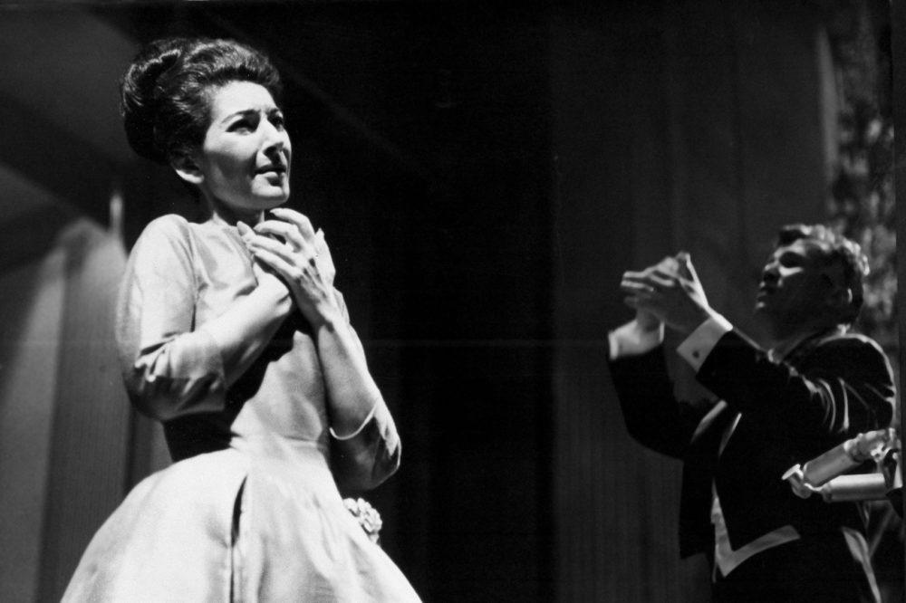

Opera Singers Database(OSD) is the directory for professional opera singers in the world.

Anyone who is in the professional opera field in the world can upload their infomartion in this website as a free.
And if anyone who has singers as an agent or managemant, please sign up as an agent and you can upload multiple singers.